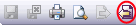
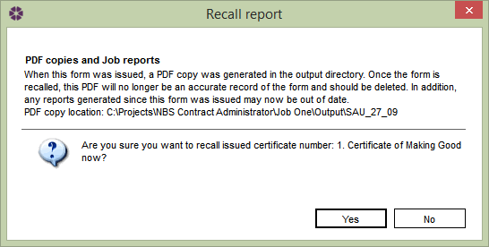
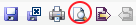
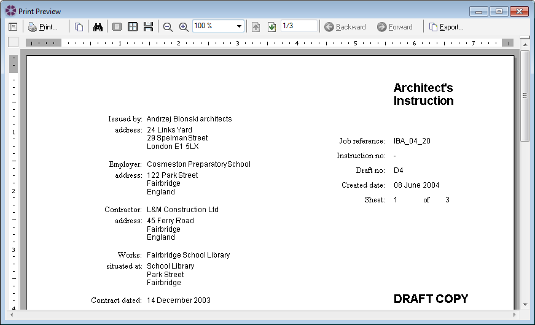

Why can't I change my Issued Form back to Draft to correct an error? |
NBS Contract Administrator allows users to recall (or un-issue) only the single last most recent form that has been issued, however this is not good working practice as users should aim to maintain a robust audit trail.
It is recommended that Forms should be approved before issuing them as they cannot be taken back to an editable state once it has been issued, unless they are the last single most recent form issued at which the user can recall them.
There are 3 ways to recall the the last single issued form in a Job:

The user will be prompted to preview the form before recalling it. Clicking Yes will open the form in the editor window to view it before they decide to recall the form. Alternatively clicking on No will bring up the following window to confirm recalling the form:

As mentioned in the window, the original PDF forms will need to be deleted manually from their Output location when the forms were issued. Click Yes to continue - the form will be editable and can be re-issue once the relevant changes have been made. Alternatively click No to cancel.
It is advisable to preview and print a draft form (a form that has not been issued), and have it approved if necessary prior to issuing the form. Please Note: certain fields will not show on a draft form (e.g. the Serial Number and Date of Issue) and will only be displayed on an issued form.
To preview a draft form, firstly open the form to view in the editor then click on the Preview button located in the toolbar on the top.

The form will open in a separate Print Preview window, where once approved it can be printed by clicking on the Print button.

The user can use the Export Functionality from the Print Preview screen to export the form to a PDF before it is sent to other individuals (for more information on Exporting, see Printing and Exporting). Once the form has been approved by the appropriate people, and the user can be sure of its correctness, only then should it be issued.
See Also:
Recalling the Last Form
Draft Form
Issuing Forms
Printing and Exporting
Frequently Asked Questions